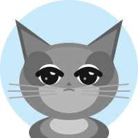

知育謎解きRPG・中国史編
アキオとパチョの
謎解きトラベラー
殷・周から近現代まで謎を解け！

パチョ！中国史！！4000年の歴史！！王朝多すぎて覚えられない！！
多いな。でもパズルを解いてクイズに正解すれば仲間がついてくる。やってみろ。
ライフは❤️❤️❤️！ヒントは🦉フクロウ博士！でもスコアが半分になるぞ！！
1
🐉
殷・周時代（古代中国）
2
🏯
秦・漢時代
3
🎋
隋・唐時代
4
🧭
宋・元時代
5
🏮
明・清時代
6
⭐
近現代中国
冒険を始める！
← ジャンル選択に戻る
ステージ 1 / 6
❤️❤️❤️
スコア
0
🦉 ヒント
仲間：
🎉
ステージクリア！
次のステージへ →
← タイトルに戻る
💀
ゲームオーバー
…中国4000年の歴史は深い。また挑め。
天の意志だ！もう一度チャンスを！！
もう一度挑戦！
← タイトルに戻る
🏆
全ステージ制覇！
やった！中国史の謎を全部解いたぞ！！！
素直に認める。よくやった。…ちょっとだけな。
集めた仲間たち
もう一度遊ぶ
← ジャンル選択に戻る
続ける →